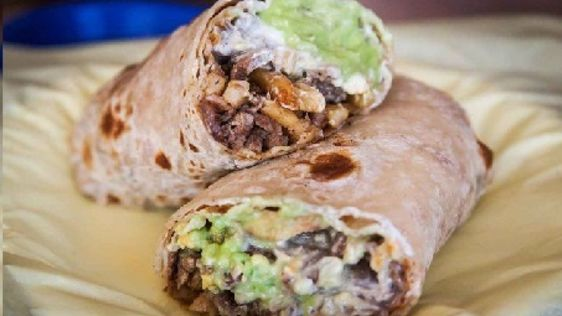

California Burrito Recipe Instructions

The best burrito you've ever had
If you lived in Southern California and moved to a new state in the country, you absolutely miss the California Burrito!
Ingredients
- 1 1⁄2lbs flank steaks (marinated in Cilantro Lime marinade, cooked, and chopped)
- 1 tablespoon sour cream (to taste)
- 2 tablespoons guacamole (homemade or pre-made)
- 8 large steak fries
- 8 ounces shredded cheddar cheese
- 1 flour tortilla
- 1 cup cilantro, lightly chopped
- 1 tablespoon lime juice
- 1/4 cup olive oil
- 3 garlic cloves
- 1 jalapeno, lightly chopped
- 1 teaspoon sea salt
- 1/2 teaspooon pepper
Directions
- Combine the Cilantro, Lime Juice, Olive oil, Garlic, Jalapeno, salt and pepper in a food processor for less than one minute or until the texture is nice and chunky. Be sure the garlic is fully processed. If you don't have a food processor you can make the marinade by dicing the cilantro, jalapenos and garlic very lightly and then mix the ingredients in a bowl with a fork.
- Marinate the steak in the cilantro lime marinade for 2-3 hours in the fridge (*do not marinate overnight as the lime has begun the cevice process!).
- Cook the steak. Lightly grease the grill grates of an outdoor grill. Heat the grill to medium-high heat. Remove the steak from the marinade and season it on both sides (lightly) with salt and pepper. Cook the steak on the grill, flipping once, until the steak has reached your desired doneness. Once the steak has finished cooking, remove it from the grill and allow it to rest for 5 minutes. Slice the steak across the grain into thin slices.
- Cook and salt the fries in the oven according to package directions, we want the big soft poofy fries, not the small hard little ones.
- Warm the tortilla and lay it out on a flat surface. Place your toppings from one edge of the tortilla about 2/3 of the way to the other edge. Steak, cheese, guac. sour cream and top with the french fries (or your prefference) Don't stack your pile more than 1-2 inches wide and an inch high. If you fill your burrito too full, you might not be able to seal it.
- Warm the tortilla and lay it out on a flat surface. Place your toppings from one edge of the tortilla about 2/3 of the way to the other edge. Steak, cheese, guac. sour cream and top with the french fries (or your prefference) Don't stack your pile more than 1-2 inches wide and an inch high. If you fill your burrito too full, you might not be able to seal it.